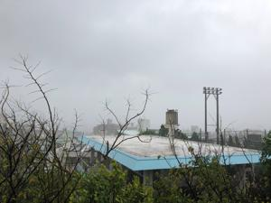
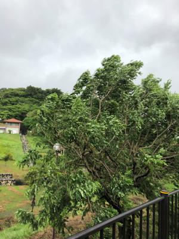
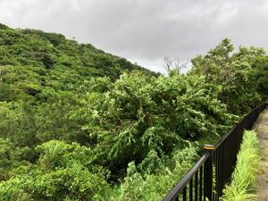
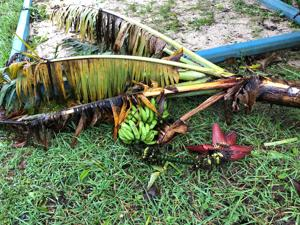

うるがいの話 ある日
最新: フード付き
うるがいとは 前提知識です
カニの画像をクリックすると『うるがいの話』サイトを表示します
うるがい(ｳﾙｶﾞｲ urugai)とは、『もずくがに』の名前でとても大きくなります。
たながー（ﾀﾅｶﾞｰtanagaa）とは手長えびのことで、何種類かあり大きいのは車 エビぐらいになります。
ぶながー(bunagaa)とは、赤い髪の毛、赤い身体、そして身長は１ｍ２０ｃｍ ぐらい、川の蟹を食べているの目撃された。場所は沖縄県国頭郡大宜味村のと ある村僕の隣近所に住んでいる爺さんから、聞いた話です。
2021年07月24日 (土）
フード付き
17:28




雨が降る午前中、ヨメのお義母さんへ食べ物を届ける。カッパを着けて老人達
が歩いている。今日は比較、風と雨が収まっているから出歩いているのだろう
私も彼らを見習って、夕方４時前雨が少し止んでいるのを見計らって、いつも
のフード付きガシャガシャを着て、４日ぶりにウォーキングへ行く。風が強い
ので傘は持たない、雨はフードを頭に被せて濡れないようにする。便利である
後頭部に西日があたるときもフードを被る。一時間ほど歩いたが、すれ違った
人は買い物に行く、女性一人だけだった。んん、そうだろう。ウォーキングを
終わり家に近づくと強い雨が降ってきた。昨日は開会式の初めから終わりまで
頑張ってライブで見る。見終わって時計を見ると２４時前、なんでこんな遅く
にやるのだろう、なんかおかしいな。体操の内村航平が鉄棒で落下、残念。そ
のせいか、私も今テンションが下がっている。